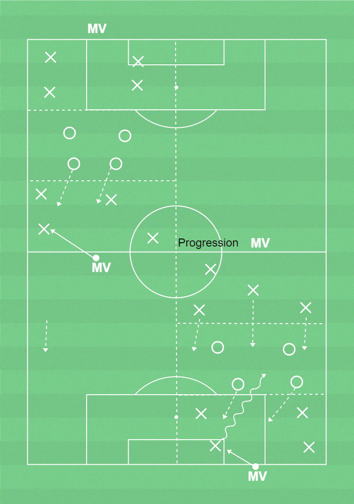

 ▶
▶
Förhindra speluppbyggnad
Genom att samarbeta i lagdelar ökar chanserna att vinna bollen.
Förhindra speluppbyggand:- Närmaste pressar.- Styr pressen åt ett håll och flytta över laget.
Målvakter (förhindra speluppbyggnad):- Kommunicera med försvarsspelarna om press och överflyttning.
Speluppbyggnad:- Spelbarhet, leta efter fria ytor och flytta bollen i första tillslaget.
Ca 14 spelare, yta 25-x15m (1/4 7 mot 7 plan), bollar, 3 färger västar
3 lag med lika många i varje. 1 MV på varje kortsida. Planen indelad i tredjedelar. 8+2 anfallare mot 4 försvarare. 4 anfallare + MV i första och sista 1/3. Uppgiften är att spela bollen från den första till den sista 1/3. 2 försvarare får gå in och pressa när MV startar spelet och de 2 andra två försvarar den centrala 1/3 och pressar åt andra hållet. Vid bollvinst ska försvarare nå MV med passning och anfallarna återerövra. Byt uppgifter efter viss tid.Intervall: 1,5 min spel - 1 min rörlighet/koordination.